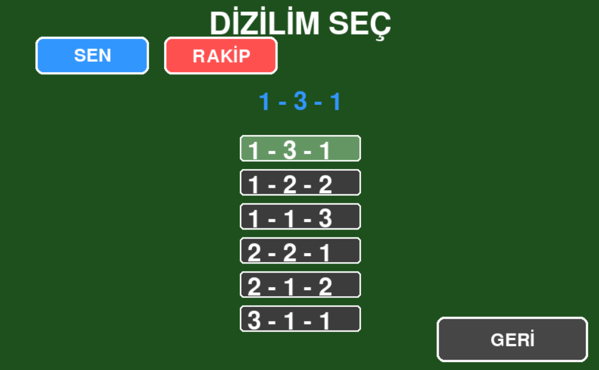
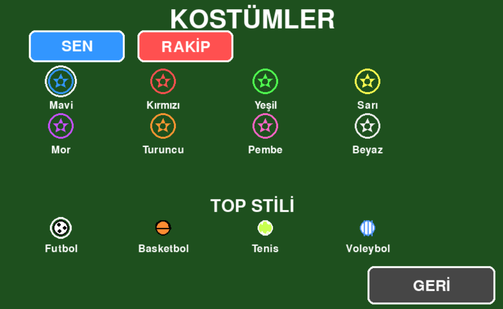
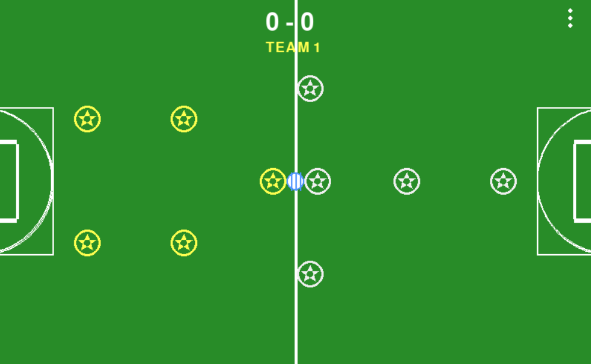

Soccer — İndir
Hafif ve eğlenceli Soccer oyunu. Aşağıdan Windows için oyunu indirebilirsiniz.
Oyuna Hızlı Başlangıç
Dosya: soccerv2.exe (.exe)
Platform: Windows
Sürüm: 2.0
Oyun Hakkında
- 1 – 2 – 1 – 1 – 3 – 1 – 2 – 1 gibi dizilimleri seçebilirsiniz.
- Renkleri özgürce ayarlayabilirsiniz.
- Top modelini seçebilirsiniz.
Geliştirici
- Python ile geliştirilmiştir.
- KEREM TÜRKMEN tarafından yapılmıştır.
- MADE IN TURKEY 🇹🇷
Ekran Görüntüleri


